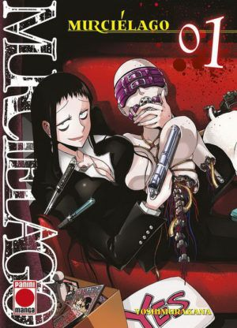

8.50 € Genere: Drama, escolar, misteri, suspens psicologic Autor: Homura Kawamoto Dibujante: Tōru Naomura 8.50 € Genere: Drama, escolar, misteri, suspens psicologic Autor: Homura Kawamoto Dibujante: Tōru Naomura  8,50 € Genere: Drama, escolar, misteri, suspens psicologic Autor: Homura Kawamoto Dibujante: Tōru Naomura 8.50 € Serie de TV (2019 - 2022). 2 Temporadas. 26 episodios. Hajime Nagumo, junto con su clase de instituto, son transportados a otro mundo donde héroes luchan en una guerra contra otras razas. Todos excepto Hajime son agraciados con habilidades especiales y fuerza sobrehumana. Hajime tendrá que sobrevivir en los confines de una mortal mazmorra y aprender a ser un héroe sin superpoderes en este nuevo mundo. Genere: Drama, escolar, misteri, suspens psicologic Autor: Homura Kawamoto Dibujante: Tōru Naomura 8,50 € Genere: Drama, escolar, misteri, suspens psicologic Autor: Homura Kawamoto Dibujante: Tōru Naomura